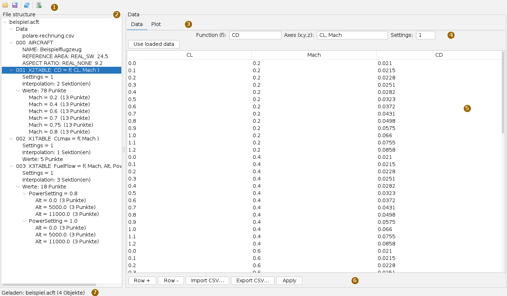
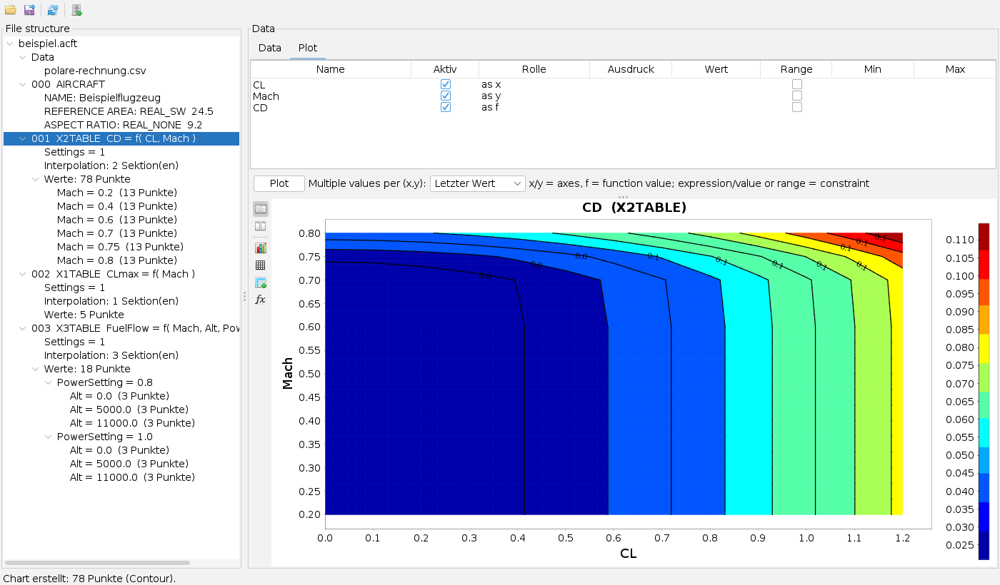
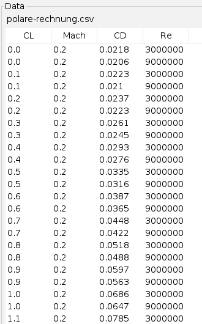
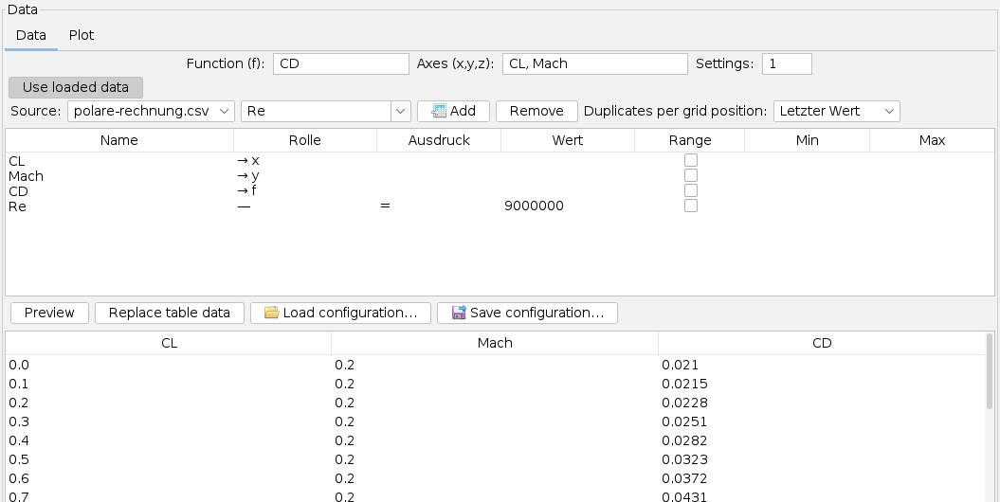
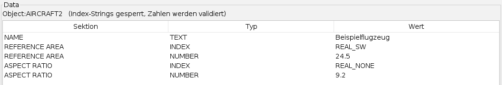

Using the ACFT editor
How-to page, as of 4 Oct 2026. How to open an aircraft file, change a function table, plot it, refill it from a calculation and write the file back safely. The pictures are screenshots of the app; the example aircraft and its numbers are invented.
The window
Open the app from the Applications menu with Open ACFT file… or with Alt+F. It asks for the file first; without a file there is nothing to edit, because the app does not create new files.

The tree shows the file as a sequence of numbered objects. Below a function table are its settings, its interpolation and its values, grouped by the blocks of the outer axes with their point counts. Whatever you select in the tree appears on the right: a function table in the table card, every other object in the object card, a data source as a pageable table. Changed objects carry an asterisk in the tree.
What the function tables contain
A function table maps one or more inputs to one output value. The type tells how many inputs there are:
| Type | Inputs | Example |
|---|---|---|
X1TABLE | one | maximum lift coefficient over Mach number |
X2TABLE | two | drag coefficient over lift coefficient and Mach number |
X3TABLE | three | fuel flow over Mach number, altitude and power setting |
The points are stored in blocks: the innermost axis runs within a block, the outer axes count the blocks. In the picture the drag table has six blocks, one per Mach number, each with 13 values of the lift coefficient.
The toolbar
The buttons show only icons; the tooltip says what they do.
| Icon | Tooltip | What happens |
|---|---|---|
 | Open ACFT file… | Load another file. Large files are read in the background. |
| Save as… | Write the file under a new name; neu_<name> is proposed so that the original is not overwritten. | |
| Check round-trip (document = loaded file?) | The document in memory is written and compared with the loaded file; the result appears in the message bar. | |
 | Load data sources (CSV/H2) | Register CSV files or H2 databases as sources; they appear in the tree under Data. |
Opening and saving safely
The file format is not openly described. What the app knows about it comes from observing real files. That is enough to find and change function tables, but not to create a valid file from scratch. The app therefore works on the template principle: it loads a file produced by the flight performance program completely, changes only what you edit and passes everything else through unchanged.
- Make a backup copy. Despite the template principle a residual risk remains. For a file that took a long time to build, a copy is the cheapest insurance.
- Open the file and check the round-trip right after loading. If the check reports equality, the app reads this file without loss. If it reports a difference, the file contains something the reader does not know yet; better not save it then.
- Make your changes, write them under a new name with Save as… and check the new file in the flight performance program.
Numbers are written in the notation of the original: same number of digits, alignment and separators. A mathematically equal number in a different notation may be treated differently by the reading program without any error showing.
Closing the app with unsaved changes asks whether to discard them.
Editing a table
The Data tab shows the meta fields at the top: Function (f) is the name of the output value, Axes (x,y,z) the inputs, Settings the settings value of the table. Below are the points, one row per point, the inputs on the left and the function value on the right.
- Change values directly in the table; Row + and Row - append a row or remove the selected one.
- Export CSV… writes the points as CSV, for example to edit them in a spreadsheet. For larger tables this detour is more convenient than the form.
- Import CSV… reads them back and checks that the number of axes matches the table. If it does, the points appear in the form.
- Only Apply writes the points into the document. It checks that every cell is a number and that as many axis names are entered as the table has axes. The CSV route also replaces only this one table; nothing changes on disk until you save.
Plotting a table

- Open the Plot tab. The configuration at the top is already filled in: the axes as x and y, the function value as f.
- For each column you can switch it off with Active, change its role or restrict it: expression and value (for example
=and0.8) or range with min and max. This is how you cut a plane out of a table with three axes. - Press Plot. Tables with one axis are drawn as a line, with two axes as a contour. If several values fall on one position (x, y), Multiple values per (x,y) decides which one counts.
The vertical bar to the left of the chart opens the settings:
| Icon | Tooltip | What happens |
|---|---|---|
| Show/hide plot configuration | The configuration table above the chart disappears; the chart gets larger. | |
| Show/hide the options area | Show or hide the chart options to the left of the chart; changes take effect immediately. | |
 | Chart options | Title, axes, legend and colour scale. |
 | Plot options | Background, grid lines and the data mesh. |
| Data points | Lay the grid points over the chart, optionally with values; clicking a point shows its details. | |
| Additional iso lines (contour plot only) | Lay another quantity over the contour as iso lines, for example the third axis. |
Complete grids are drawn as a grid contour, irregular point clouds through a triangulation. Zoom reset returns to the limits entered in the axis options.
Loading data from a calculation

New values often come as the result of a calculation, as a CSV file with one column per quantity and more columns than the table needs. In the example the calculation delivered the drag for two Reynolds numbers; only one of them is to go into the table.

- Register a CSV file or H2 database with Load data sources. The first time, a CSV file is converted into an H2 database next to the file; if that database is up to date, it is reused. The source then appears in the tree under Data.
- Select the target table and press Use loaded data in the Data tab. The import area opens.
- Choose the Source, then pick the variable for each column and press Add. The role decides what the column becomes: → x, → y, → z for the axes, → f for the function value, — for a column that only filters. In the picture
Re = 9000000selects one of the two Reynolds numbers. - If several rows fall on the same grid position after filtering, Duplicates per grid position decides: last value, first, mean, minimum, maximum or an error message.
- Preview reports in the status line how many points and blocks would result and how many duplicates were resolved. The order follows the block format of the file and cannot be chosen.
- Replace table data asks for confirmation and then replaces the points of the table. The file is only written when you save.
Save configuration… and Load configuration… store the choice of columns, roles and filters as an XML file for reuse with the next calculation.
Other objects

All objects that are not function tables open in the object card: one row per value with section, type and value. Numbers are checked when changed. Index identifiers such as REAL_SW are locked, because which values are allowed there is not known.
Only the lines you changed are written; the rest of the object stays byte for byte as it was.
What is saved
- The file itself only with Save as….
- The companion file
<file>.acft.chartcfg.propertiesnext to the file holds the plot configuration, the chart style and the registered data sources. Additional iso lines and data point settings are not saved yet. - The session remembers the file path and the selection in the tree.
Icons: Fugue Icons by Yusuke Kamiyamane, licence CC BY 3.0.